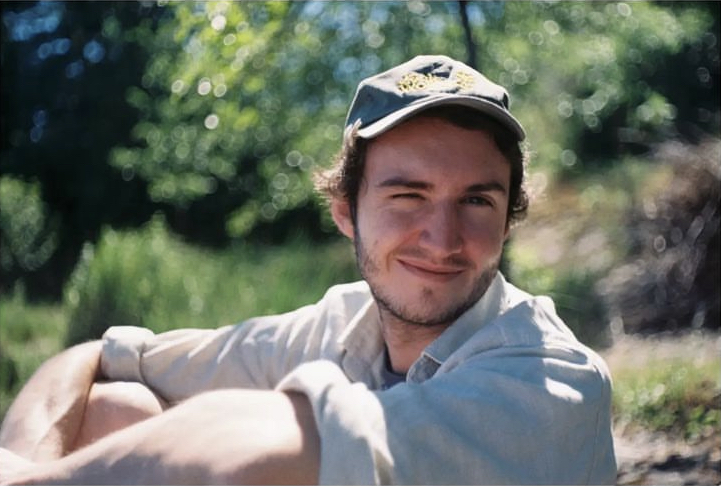
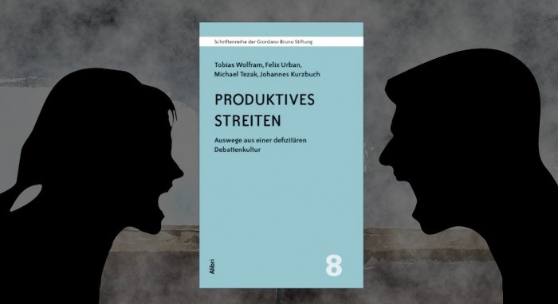

Über mich
Weitere Interessen, Tätigkeiten & Publikationen:
Musik, humanistisches Engagement
Musik

Neben meinen Data Science Ambitionen bin ich als Gitarrist tief in der Musik verwurzelt.
Als der Sohn zweier Musiker kam ich sehr früh schon mit Musik in Berührung.
Mit 14 gründete ich meine erste Band, mit 16 begann ich Gitarre zu unterrichten.
Zunächst privat, später auch an einer Musikschule.
Über die Jahre begleitete ich mehrere Duzend Schüler im Alter von 5 bis ca. 50 Jahren.
Ich merkte schnell, dass man auch als Lehrer viel zu lernen hat,
z. B. wie man gute Lehrmaterialien erstellt,
Konzepte und Techniken pädagogisch sinnvoll kommuniziert,
mit sehr verschiedenen Persönlichkeiten umgeht und
die richtige Balance zwischen
Komfort und Herausforderung findet.
Darüber hinaus arbeitete ich stets auch als Studio-, Konzert- und sogar als Straßenmusiker.
Ich spielte in etlichen festen oder spontanen Konstellationen
und erprobte die verschiedensten Musikrichtungen:
jazzig angehauchte
Singer-Songwriter Musik,
Indie- und
Psychedelic Rock, aber auch
R&B und
Rap.
Unter anderem teilte ich Bühnen und Studios mit
Bakery,
Temple Haze,
Júlia Pigali,
Olmo,
Emmae,
Che Lingo,
Alice Phoebe Lou und
James Hersey.
Humanistisches Engagement
Während meines Studiums wurde ich Mitglied der SHBH (Säkulare Humanisten an Berliner Hochschulen) – einer Universitätsgruppe mit enger Bindung an die Giordano-Bruno-Stiftung. Gemeinsam organisierten wir öffentliche Vorträge und Podiumsdiskussionen mit renommierten Personen des öffentlichen Lebens (bspw. Robin Hanson, Hamed Abdel Samad, Prof. Dr. Stefan Lorenz Sorgner, Prof. Dr. Wolfgang Nellen, Harald Ebner, Mario Brandenburg, Katrin Staffler, u. v. m.)  und halböffentliche Lesekreise zu den Themen Religion, Künstliche Intelligenz, Transhumanismus, Menschenrechte, Demokratie, Soziale Netzwerke und Journalismus. Im August 2019 nahm ich am Sommerforum der Giordano-Bruno-Stiftung teil und wurde zum Mitbegründer einer Arbeitsgruppe zum Thema Debattenkultur in Deutschland. Motiviert war dies von der zunehmenden politischen Polarisierung, die wir besonders im Zuge der Migrationskrise um uns herum wahrnahmen und der Intuition, dass es hilfreich wäre, sich damit auseinanderzusetzen, wann und warum der Mensch generell dazu neigt, in rigidem Lagerdenken zu verharren, bzw. was ihm stattdessen zu mehr Neugier, Wohlwollen und Faktentreue verhilft. Aus unserer Arbeit gingen zwei schriftliche Publikationen hervor (siehe unten).
Publikationen
- BUCH: Produktives Streiten — Auswege aus einer defizitären Debattenkultur. Tobias Wolfram, Felix Urban, Michael Tezak, Johannes Kurzbuch. Band 8 der Schriftenreihe der Giordano-Bruno-Stiftung. Aschaffenburg: Alibri Verlag, 10/2020.
-
ARTIKEL: Produktives Streiten — Was ist falsch am Moralismus?
Felix Urban, Michael Tezak. Der Skeptiker (Magazin), 2/2022.